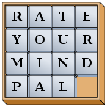

ПРАВИЛА ГРИ
Мета гри — впорядкувати плитки по зростанню номерів, переміщаючи їх всередині коробки, бажано зробивши якомога менше переміщень та якнайшвидше. Керувати плитками можна натискаючи ліву кнопку миші по сусідній з пропуском клітинкою або використовуючи стрілочки на клавіатурі. Нижче представлені одна з можливих початкових ситуацій та розв'язок головоломки. Кількість витраченого часу та ходів буде записуватись в кінці гри у таблицю лідерів. Удачі!
ІСТОРІЯ
Походження
Винахідником головоломки був Ной Палмер Чепмен, поштмейстер з Канастоти, який ще в 1874 році показував друзям головоломку, що складалася з шістнадцяти пронумерованих квадратиків, які треба було скласти в ряди по чотири штуки так, щоб сума чисел в кожному ряду була рівна 34. З роками п'ятнашки видозмінилися — і найпопулярнішим вважається варіант з 15 пронумерованими кісточками в коробці та однієї з незаповненим осередком. Мета гри — впорядкувати кісточки по зростанню номерів, переміщаючи їх всередині коробки, бажано зробивши якомога менше переміщень.
Різноманітність
Випущено багато варіантів головоломки. У деяких варіантах замість упорядкування чисел ставиться за мету відновити деяке зображення. Замість чисел можна використовувати літери; Присутність хоча б двох однакових літер може зробити вирішення головоломки нетривіальним завданням.
